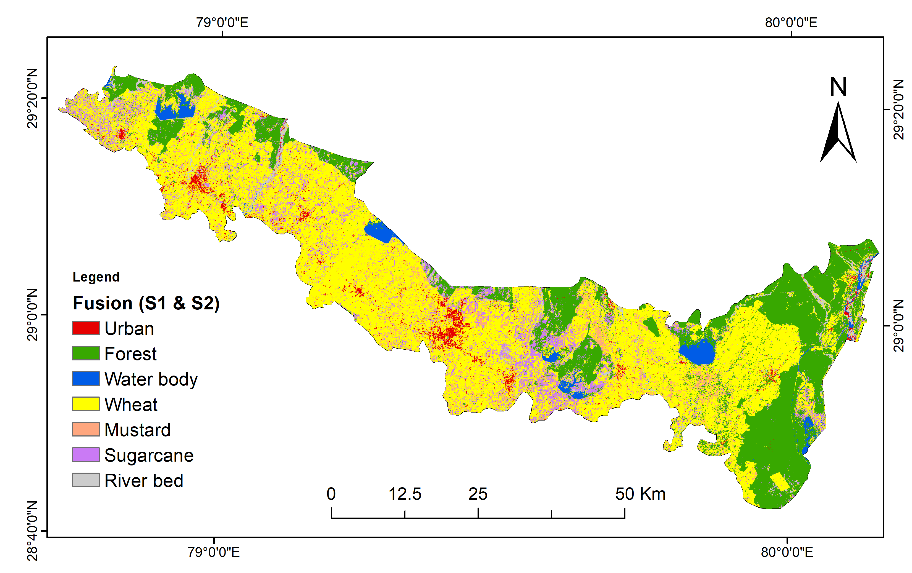

Sentinel SAR–Optical Fusion for High-Accuracy Crop Mapping
Published: August 13, 2025
Accurate crop mapping is essential for agricultural monitoring, yield estimation, and food security planning. Traditional optical remote sensing, while powerful, is often hindered by cloud cover during the crop growing season. Synthetic Aperture Radar (SAR) from Sentinel-1 overcomes this limitation by providing all-weather, day-and-night imaging. However, SAR alone may lack the spectral richness required for precise crop classification.
In this research, I implemented a multi-temporal fusion of Sentinel-1 SAR backscatter data with Sentinel-2 optical reflectance bands using the Google Earth Engine platform. Speckle filtering techniques, including the Lee filter, were applied to enhance SAR data quality. Multi-temporal composites were generated to capture seasonal phenological changes in crops.
A Random Forest classifier was employed, leveraging both SAR backscatter (VV, VH) and optical spectral indices such as NDVI, EVI, and Red-Edge indices. The fusion significantly improved classification accuracy — achieving over 90% overall accuracy in Udham Singh Nagar district case study, outperforming single-source datasets.
This SAR–optical fusion approach demonstrates immense potential for operational agricultural monitoring, particularly in monsoon-dominated regions where cloud cover is frequent.